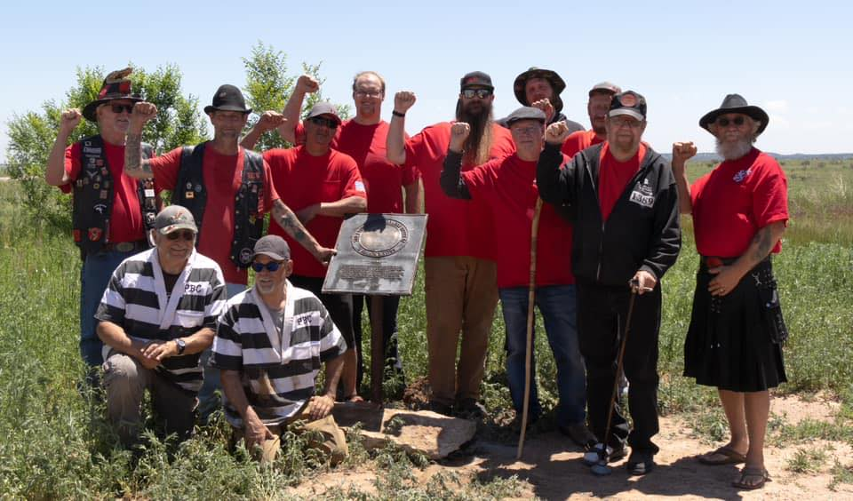

Al Packer #100

Welcome to the Al Packer #100 Website
Al Packer Chapter #100, Colorado, is the Colorado Chapter of The Ancient and Honorable Order of E Clampus Vitus (ECV). ECV is a non-profit fraternal organization dedicated to the study and preservation of Western heritage. We research sites of historical interest (though perhaps not of interest to mainstream historians) and erect plaques to mark them. We partner with other Historical societies and/or will go it alone to plaque sites. ECV has erected many hundred historical markers and plaques to commemorate sites, people and events that played a role in our western heritage but might otherwise be lost or forgotten. The work is, of course, voluntary and we seek absolutely no monetary reward for our work and we generally fund the plaques to be erected.
We have plaqued the gold mines at Victor; the City Hall, Elks Lodge and cemetery in Victor; Navajo Hogan's, the Rock Island Interurban Roundhouse in Colorado Springs; the Steam Plant, Victoria Tavern, Jackson Hotel in Salida; Crown Point cemetery in grand Junction, and the Rocky Flats Nuclear Plant near Boulder to just name a few.
ECV is also involved in community projects and raise money for educational scholarships.
The Ancient and Honorable Order of E Clampus Vitus (ECV) is a fraternal organization dedicated to the study and preservation of Western heritage, especially the history of the Mother Lode and gold mining regions of the area. The fraternity is not sure if it is a "historical drinking society" or a "drinking historical society." There are chapters in California, Arizona, Colorado, Idaho, New Mexico, Nevada, Oregon, Utah and Washington. Members call themselves "Clampers." The organization's name is in Dog Latin, and has no known meaning; even the spelling is disputed, sometimes appearing as "Clampus", "Clampsus", or "Clampsis". The motto of the Order, Credo Quia Absurdum, is generally understood as meaning "I believe it because it is absurd."; the proper Latin quotation Credo quia absurdum est, is from the Christian apologist Tertullian (140-230), who rejected rationalism and accepted a Gospel which addressed itself to the "non-rational levels of perception."